In order to develop on the EMF project, you need the following software installed on your system.
- Eclipse Version 2.1 or later
- A JRE as required by Eclipse
When specifying directory paths on your system, remember to compensate for the difference between the environment presented in this article and your development environment.
Each EMF plug-in depends on other plug-ins. Since Eclipse 2.1, the PDE provides an alternative way of expressing and computing the classpath using classpath containers. In order to turn on the use of classpath containers, do the following:
- Select Windows > Preferences.
- Expand Plug-In Development and select Java Build Path Control.
- Check the Use classpath containers for dependent plug-ins option. (Note: Leave the Preferences dialog open as you’ll need it for the next step.)
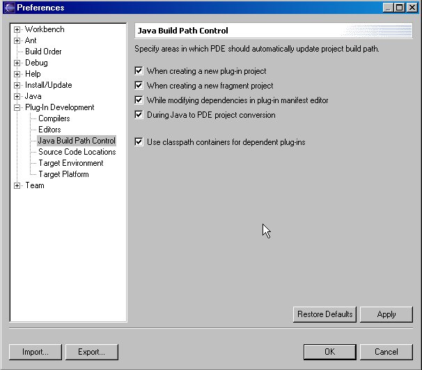
You need to specify where Eclipse should look for required plug-ins if they do not exist in the current workspace. To do this:
- In the Preferences dialog, with Plug-In Development expanded, select Target Platform.
- Make sure the this application radio button is selected.
- Click Select All so that all the plug-ins are selected.
- Click OK to close the Preferences dialog.
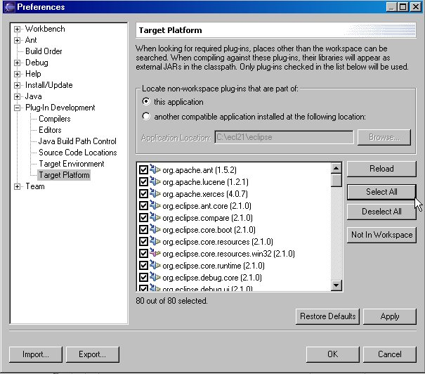
If you are unfamiliar with CVS concepts, there is a good list of resources on the CVS repository page.
For each published EMF driver, a new CVS branch is created. The name of the CVS branch follows this convention:
EMF_<version number>_<driver level>
where
<version number> is based on the current EMF version (for example, 1_1_0), and
<driver level> is the driver level that was used to drop to the CVS repository.
For example, a branch might have the following name:
EMF_1_1_0_20030501_0612VL
The HEAD branch will always contain the latest file versions. Therefore, in order to get the latest files, you would just have to work with the HEAD branch. The structure of the CVS repository is shown below:
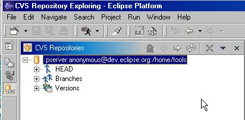
As multiple drivers are placed in CVS, the repository will have a HEAD branch corresponding to the latest driver, and entries under Branches that correspond to earlier EMF build levels. If for some reason you need to get files from a certain driver, you would check out code from the branch you are interested in.
An anonymous user will have access only to check out files from the CVS repository. This user does not have the privileges to check in files into CVS.
Configuring the CVS client to check out EMF files
To check out EMF files from CVS:
- Open a CVS perspective in the Eclipse Workbench by selecting Windows > Open Perspective > CVS Repository Exploring.
- Right click on the CVS Repositories view as shown below, and select New > Repository Location...
- Enter the information as shown below in the Add CVS Repository dialog and click Finish. This will establish a connection with the \home\tools repository located on dev.eclipse.org using the anonymous user ID. Make sure you set the connection type to pserver and use the default port as shown.
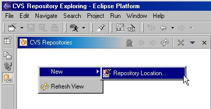
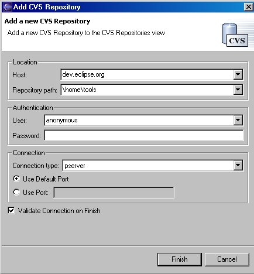
Checking out code from CVS for the first time
If you followed the previous section, you should see a new repository entry in the CVS Repositories view. To check out code, do the following:
- Expand the repository node.
- Then expand the HEAD node as shown below to view all the modules in the CVS Repository.
- Now you are ready to check out the EMF CVS modules. Scroll down and highlight all the modules that start with “org.eclipse.emf” as shown below. Then right click and select the Check Out As Project menu option.
- Once this is done you should have a project for each of the EMF CVS modules that you check out. Switch to the Java perspective to use the projects.
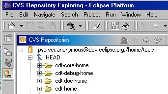
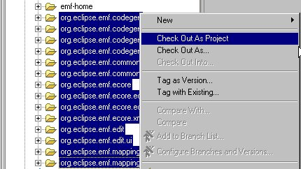
Following this scenario, you will find that the projects have compilation errors after you check them out. To resolve these, update the classpath. To do this, right click on the project and select the Update Classpath... menu option as shown below. The Update Java class path dialog will appear.
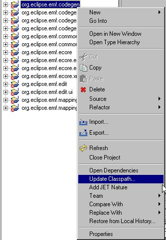
Ensure that your project is checked in the Plug-ins and Fragments Found list, and then click Finish. Note: If you want to update all the EMF projects, select all the EMF projects in the dialog before you click Finish.

To synchronize your local changes with the HEAD CVS branch, right click on the resource that you want to synchronize, and then select Team > Synchronize with Repository.
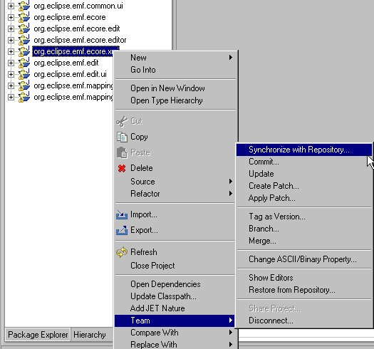
The synchronize view should be open at this point. The following text is from the Eclipse help contents and briefly discusses the synchronization view. Please refer to the Eclipse help for the complete context and additional information.
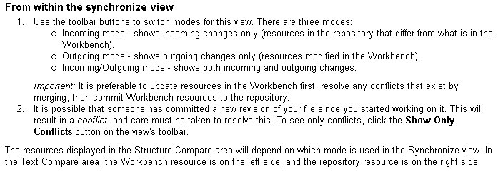
At this point you can manually merge your changes or automatically merge the changes. To automatically merge your changes, right click on the resource you want to merge. Select Team > Update as shown below.
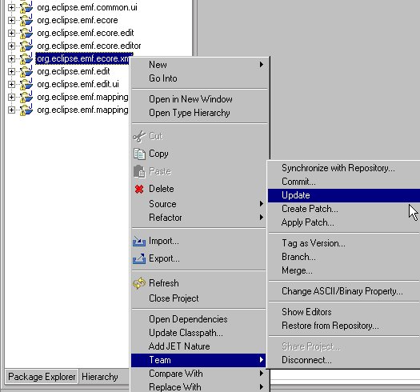
If there are conflicts that CVS cannot resolve, it will insert special markup in the file to indicate that those lines could not be merged. If you want more information about CVS, refer to the Eclipse help files.